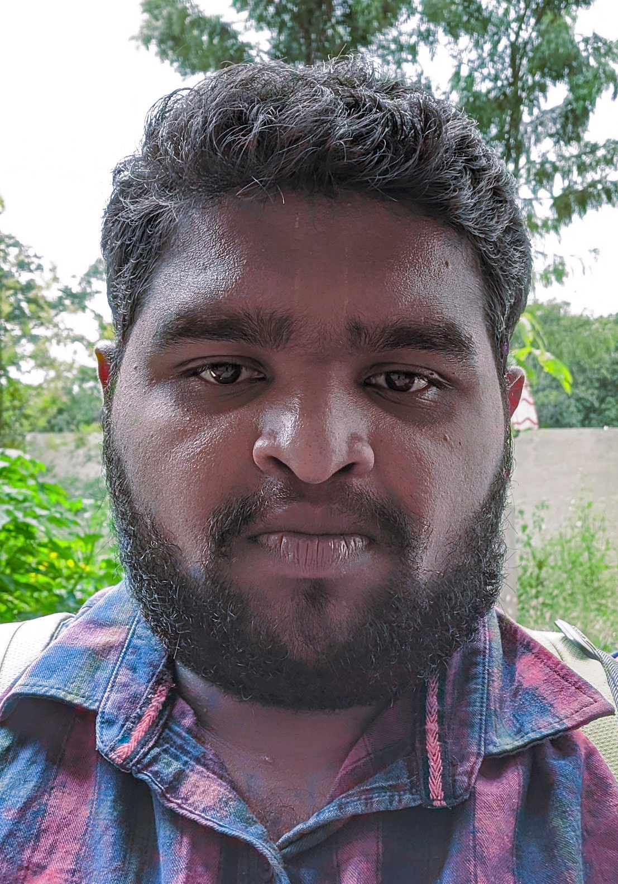

Srisha B Joshi

Summary
I am a aspiring Web Developer and Software tester, want to build amazing web
application and to be stand out from the crowd.
Education
-
Bachelor's Degree in Civil Engineering from 2017 to 2021 at HMS
Institute of Technology
-
Diploma in Civil Engineering from 2013 to 2017 at Siddaganga Polytechnic
- 10th board in the year 2011 at Sarvodaya High School
Work Experience
-
Software Development Engineer - Intern - AxiomIO
September 2021 - February 2022
- Tested the basic functionality of a website.
- Did the basic automation of a website
- Learnt about test documentations.
-
Learnt about generating the Test results report for manual and
automation testing.
-
Software Development Engineer - AxiomIO
March 2022 - February 2023
- Tested a Website, which is built with angular.
- Written the functional and non-functional test cases.
- Automated the complete cycle of the website.
- Did one major release, and around ten minor releases.
- Written the test plan, test release document.
-
Software Development Engineer - Ofofo
February 2023 - August 2023
- Tested the Ofofo's website.
- Written the functional and non-functional test cases.
- Implemented the automation of the basic and advanced process.
- Did one major and one minor release.
- Involved in making our company reach for wider audience.
Skills
- Python
- Java
- Manual Testing
- Robot Framework
- TestNG
- HTML
- CSS
- JavaScript
- Bootstrap
- tailwind CSS
- React JS
- NodeJS
Awards and Certifications
- Cyber Security Certification - IIIT-B - 2023
- Software Testing - QSpiders - 2021
Others